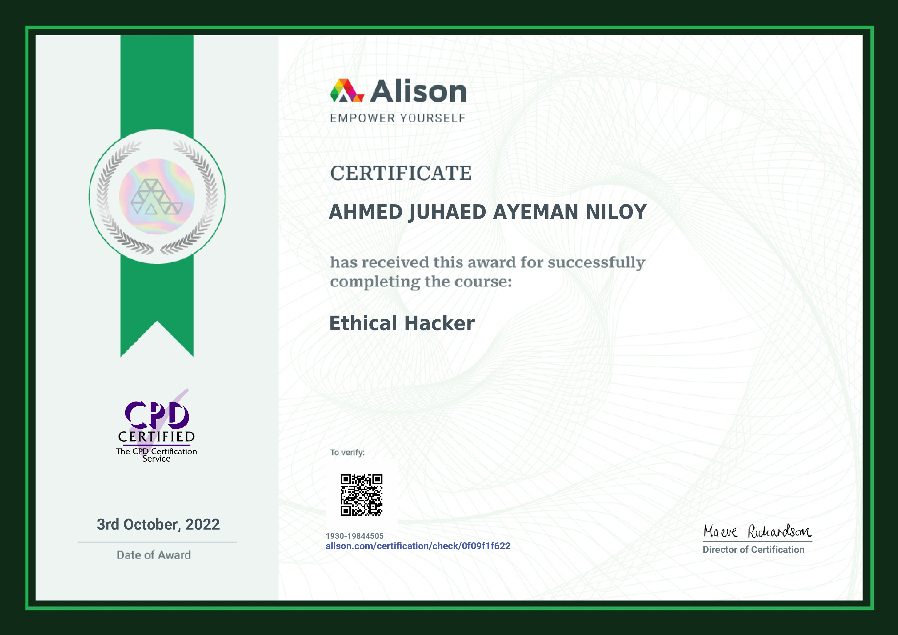

AJA RETRO
Ahmed Juhaed Ayeman Niloy
Web Developer, Ethical Hacker, and Digital Creator based in Khulna, Bangladesh.
Intro
A casual competitive gamer (Idk how that goes together). And I sometimes sing, favorite band: Warfaze.
Certifications
 Verify CertificateDetails
- Profile - Digital Creator
- Game Developer at Sheikh Games
- Former Video game developers at Eviyon Network
- Went to Government Sundarban Adarsha College, Khulna
- Birthday - 14 February 2007
- Lives in Khulna
- From Madaripur, Dhaka, Bangladesh